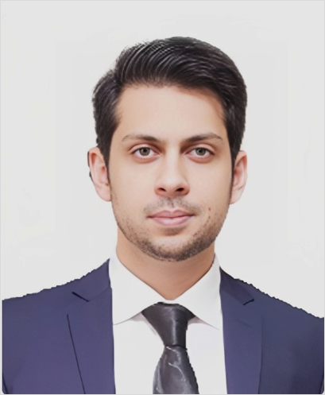

Assistant Professor · Civil Engineering
Department of Civil and Environmental Engineering, Saitama University, Japan
Bridging geotechnical and structural disciplines through high-fidelity numerical modelling and experimental investigation of soil–pile–structure systems under seismic loading.

Assistant Professor of Civil Engineering with specialized expertise in Geotechnical Earthquake Engineering and Soil–Structure Interaction (SSI). Research bridges the gap between geotechnical and structural disciplines, utilizing high-fidelity numerical modelling and experimental investigations to evaluate the dynamic response of soil–pile–structure systems.
Expert in nonlinear soil behaviour, foundation dynamics, and the seismic performance of deep foundations under multi-directional loading. Actively engaged in funded research initiatives and graduate supervision, with specific experience mentoring diverse cohorts within the International Graduate Program.
Dedicated to advancing resilient infrastructure and incorporating research-driven approaches into teaching. Skilled in supporting international students through academic advising and research guidance.
Nonlinear dynamic analysis of coupled soil–pile–structure systems; kinematic and inertial interaction effects.
Experimental and numerical assessment of single piles and pile groups under vertical, lateral, and combined seismic loading.
High-fidelity modelling of soil nonlinearity and boundary conditions using advanced finite element methods.
Performance-based seismic assessment and retrofitting strategies for foundations in seismically active regions.
Lifecycle performance of foundation systems and innovative soil-foundation enhancement techniques.
Shake-table and base-excitation experiments to validate numerical models and characterise soil behaviour under cyclic loading.